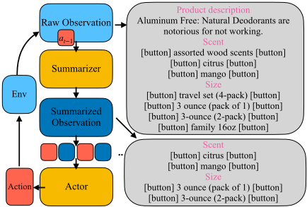
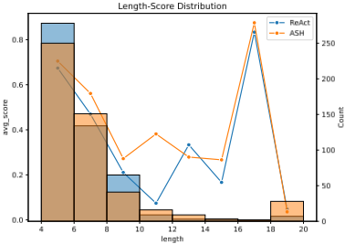
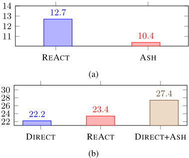

分层提示辅助大语言模型（LLM）进行网页导航
LLM 在网页导航等交互式决策任务中难以处理冗长复杂的观察（如完整网页），长轨迹历史也难以塞进有限上下文窗口。论文提出 ASH（Actor-Summarizer-Hierarchical）分层提示方法：先用专门的 SUMMARIZER 提示把原始观察与上一动作压缩成与目标相关的精简观察（针对商品页、搜索结果页等场景定制 step-by-step 指令与 few-shot 示例），再由 stateful 的 ACTOR 基于压缩后的历史预测下一步动作。在 Webshop 电商基准（约 118 万商品、500 条轨迹、全商品空间）上，ASH 较此前 SOTA 的 REACT 任务成功率提升 6.8%（相对提升 29%）、平均分提升超过 3.3%；在超过 11 步的长轨迹上平均分从 7.4 升至 38.2，无效动作导致的失败率从 12.7% 降至 10.4%。论文还发现引入观察压缩后，无需显式推理的简单 DIRECT 提示也能显著超过 REACT，说明冗余上下文是幻觉与推理负担的重要来源。
LLM 在交互式决策任务（网页导航）中难以处理复杂观察：完整网页观察包含大量冗余与无关信息，长轨迹历史在有限上下文窗口内难以编码，导致动作预测不准、产生点击不存在按钮等无效动作（幻觉）。此前工作多聚焦动作空间塑形（程序化动作、推理+行动协同），很少关注状态观察的有效编码。
提出 ASH（Actor-Summarizer-Hierarchical）分层提示，将动作生成概率分解为两个模块：(1) stateless 的 SUMMARIZER：输入上一动作与原始观察，输出压缩后的 action-aware 观察；其提示包含上一动作与指令、原始观察、按场景定制的 step-by-step（CoT）指令与 few-shot 示例（如商品页验证与选项过滤、搜索结果压缩、改写搜索词、对 Invalid Action 添加提示等）；(2) stateful 的 ACTOR：基于由压缩观察与动作交替构成的历史 H't 预测下一动作。ACTOR 与 SUMMARIZER 提示独立开发、可分别优化。在 Webshop 上用 CODE-DAVINCI-002 与 GPT-3.5-TURBO-0613 验证（greedy 解码、max token 500、20 步上限、连续 5 次无效动作终止）。
Webshop（CODE-DAVINCI-002，500 条轨迹）：ASH 较 REACT 任务成功率提升 6.8%（相对提升 29%），平均分提升超过 3.3%（注：摘要处写 6.2%，正文引言与实验部分均为 6.8%）
GPT-3.5-TURBO（4k 上下文）上 ASH 相对 REACT 的提升更显著：REACT 常超出上下文长度导致失败，ASH 通过压缩观察把历史有效编码进有限上下文预算（具体数值见表 1，正文文本未给出）
长轨迹（超过 11 步）上：REACT 平均分仅 7.4，ASH 提升至 38.2
无效动作失败模式：REACT 有 12.7% 的失败源于重复无效动作，ASH 相对降低 18%，将该失败率降至 10.4%
将 ASH 应用于无显式推理的简单 DIRECT 提示后，能以显著优势超过更复杂的 REACT，说明显式推理的部分需求源于 LLM 难以处理复杂观察
与最接近的 REACT 相比有两点区别：(1) ASH 将观察处理拆为两步——先压缩观察再行动，而 REACT 在单一提示内部隐式完成压缩并直接行动；(2) ASH 将 ACTOR 与 SUMMARIZER 提示分开开发，允许分别增强，而 REACT 只依赖 ACTOR 提示的效果。相比以往只塑形动作空间或增加 think 推理步的工作，ASH 聚焦于状态观察的编码与压缩，并证明压缩后可减轻对显式推理的依赖。
相关度级别：high
命中能力域：3.1 上下文工程与记忆 | 3.2 提示工程 | 3.3 Agent 架构与工具使用 | 3.5 评测与可靠使用
理由：论文正面命中团队多个能力域：核心贡献是把冗长观察压缩进有限上下文窗口并有效编码历史（3.1 上下文工程与记忆）；方法本体是分层提示与按场景定制的 CoT 指令、few-shot 示例设计（3.2 提示工程）；系统形态是单 Agent 的 harness 模块分工与执行可靠性改进（减少无效动作与幻觉，3.3 Agent 架构与工具使用）；并以基准量化了失败模式与上下文预算下的表现（3.5 评测与可靠使用）。对团队构建研发自动化 Agent 时的上下文组织、提示架构与可靠性评测均有直接、可复用的借鉴。
建议动作：深入精读并做内部分享
arXiv:2305.14257v3 [cs.CL] 2023年10月30日
Chi-Fan Lo
Abishek Sridhar
Frank F. Xu Hao Zhu Shuyan Zhou
卡内基梅隆大学计算机科学学院
{abisheks,chifanl,fangzhex,zhuhao,shuyanzh}@cs.cmu.edu
摘要
大型语言模型（LLMs）在交互式决策任务中难以处理复杂的观测内容。为了缓解这一问题，我们提出了一种简单的分层提示（hierarchical prompting）方法。与以往总是将完整观测（例如一个网页）放入提示中的提示方法不同，我们提出先通过一个专用的 SUMMARIZER 提示构建一种更精炼、更相关的动作感知观测（action-aware observation）。随后，ACTOR 提示基于摘要化后的观测来预测下一个动作。尽管我们的方法具有广泛的适用性，我们特别在网页导航这一复杂领域中展示了其有效性，在该领域中，完整观测往往包含冗余且无关的信息。我们的方法在任务成功率上比以往最先进的提示机制高出 6.2%，展示了其在具有长观测轨迹的交互式决策任务上的潜力。
∗ 同等贡献
† 通讯作者
1 代码可在 https://github.com/robert1003/ash-prompting 获取

历史记录
引言
在日常生活中，我们经常会遇到诸如家务劳动（Shridhar et al., 2020）和网页导航（Shi et al., 2017; Zhou et al., 2023）这类需要进行交互式、顺序决策的任务。这些任务要求我们基于环境状态和特定目标（例如购买一件衬衫）来采取行动（例如输入搜索查询）。利用自然语言命令来自动化这些决策任务的研究兴趣日益增长（Yang et al., 2023）。
大型语言模型凭借其编码海量现实世界知识的能力，在执行交互式决策任务方面展现出了潜力。在这些任务中利用 LLM 的一种常见方法是通过少样本的上下文（in-context）示例（Ahn et al., 2022）。以往的研究主要聚焦于塑造动作空间的各种技术，例如通过程序对动作进行结构化表示（Zhou et al., 2021; Liang et al., 2022; Singh et al., 2022），以及促进推理与行动之间的协同（Yao et al., 2022b）。然而，如何有效编码状态却鲜少受到关注，而当交互环境多样且冗长时，这一点尤为关键。
本工作旨在利用提示（prompting）方法优化状态观测。我们提出了如图 1 所示的 ASH（Actor-Summarizer-Hierarchical）提示方法。我们的方法包含两个关键组件：(1) 一个 SUMMARIZER（摘要器），它接收来自环境的原始观测，并生成一种对目标更有意义的新表示。它通过从一个专用提示中学习来实现这一点，该提示展示了在不同场景下所期望的摘要方式。在图 1 中，指令要求一小瓶带有水果的除臭剂
†
香味。当前产品包含满足该要求的合适配置。然而，其中存在产品描述等不必要的细节，以及大容量瓶装等分散注意力的选项。总结器（SUMMARIZER）会过滤掉这些无关内容，仅保留相关信息以供进一步处理。(2) 一个行动器（ACTOR），它接收轨迹历史（即观测和动作）并生成下一个动作。ASH 的分层模块化设计通过避免将所有信息倾倒进单个提示，有效减轻了沉重的推理负担。ASH 的 SUMMARIZER 能够有效去除无关信息，并提供更简洁的观测表示。这种表示与上下文中的示例相一致，从而使 ACTOR 能够做出更精确的预测。我们将 ASH 应用于网页导航，特别侧重于在真实世界规模的电子商务模拟器 Webshop（Yao et al., 2022a）上购买商品，因为据我们所知，它是唯一具有复杂观测空间的现有相关数据集。我们的 ASH 在任务成功率上比先前的最先进方法（Yao et al., 2022b）显著高出 6.8%（相对提升 29%）。这些结果表明，ASH 有望应对真实世界交互式决策任务中全面历史和复杂状态所带来的挑战。不同场景。在图 1 中，指令要求一小瓶水果香味的除臭剂。当前产品包含满足该要求的合适配置。然而，其中存在产品描述等不必要的细节，以及大容量瓶装等分散注意力的选项。总结器（SUMMARIZER）会过滤掉这些无关内容，仅保留相关信息以供进一步处理。(2) 一个行动器（ACTOR），它接收轨迹历史（即观测和动作）并生成下一个动作。ASH 的分层模块化设计通过避免将所有信息倾倒进单个提示，有效减轻了沉重的推理负担。ASH 的 SUMMARIZER 能够有效去除无关信息，并提供更简洁的观测表示。这种表示与上下文中的示例相一致，从而使 ACTOR 能够做出更精确的预测。我们将 ASH 应用于网页导航，特别侧重于在真实世界规模的电子商务模拟器 Webshop（Yao et al., 2022a）上购买商品，因为据我们所知，它是唯一具有复杂观测空间的现有相关数据集。我们的 ASH 在任务成功率上比先前的最先进方法（Yao et al., 2022b）显著高出 6.8%（相对提升 29%）。这些结果表明，ASH 有望应对真实世界交互中全面历史和复杂状态所带来的挑战。
绿色）。重要的是，我们设计了针对不同场景量身定制的专用指令，以鼓励多样化的推理。例如，如图 2 所示，该指令概述了如何处理商品页面。具体而言，SUMMARIZER 的任务是验证商品是否符合需求，随后过滤掉任何无关的选项。更多关于改进搜索查询、压缩搜索结果等方面的指令可在附录 C.1 中找到。通过这种方式，总结后的状态可以更加针对当前场景进行定制。3.2 ACTOR 2022）关于如何总结当前状态（绿色部分）。重要的是，我们设计了针对不同场景量身定制的专用示例，以鼓励多样化的推理。例如，如图 2 所示，该指令概述了如何处理商品页面。具体而言，SUMMARIZER 的任务是验证商品是否符合需求，随后过滤掉任何无关的选项。更多关于改进搜索查询、压缩搜索结果等方面的指令可在附录 C.1 中找到。通过这种方式，总结后的状态可以更加针对当前场景进行定制。
我们遵循现有工作来设计 ACTOR 提示。每个示例由自然语言（NL）指令以及截至当前时间步 t 的交互历史组成。该历史以动作、总结后的观测的序列形式呈现。ACTOR 的目标是为当前步骤产生期望的动作。图 3 中列出了 ACTOR 的一个示例，完整提示列于附录 C.2 中。4 实验 3.2 ACTOR 我们遵循现有工作来设计 ACTOR 提示。每个示例由 NL 指令以及截至当前时间步 t 的交互历史组成。该历史以动作与总结后的观测交替出现的序列形式呈现。ACTOR 的目标是为当前步骤产生期望的动作。图 3 中列出了 ACTOR 的一个示例，完整提示列于附录 C.3 和 C.4 中。
数据集 我们在 Webshop（Yao et al., 2022a）上测试 ASH，这是一个真实世界规模的电子商务基准测试（benchmark），其中智能体与一个亚马逊风格的网站交互，以购买由……描述的商品 4 实验 数据集 我们在 Webshop（Yao et al., 2022a）上测试 ASH，这是一个真实世界规模的电子商务 benchmark，其中智能体与一个亚马逊风格的网站交互，以购买由……描述的商品
一些自然语言（NL）描述（例如，'Find me black ereader with price lower than 270.00 dollars'）。在此基准测试（benchmark）中，智能体可以执行三种动作：(1) search[...]，使用基于文本的查询 (2) click[...]，点击任何可交互的网页元素 (3) think[...]，思考当前情况并做出进一步的移动。think 动作不会改变状态，该动作借鉴自 REACT (Yao et al., 2022b)。Webshop 凭借其大规模且多样化的商品目录为智能体带来了重大挑战，该目录包含 1,181,436 件独特商品，每件商品都有其独特的特征，从而形成了一个高度复杂且多变的状态空间。我们在完整商品空间 plus 上使用了 Webshop 的文本丰富设置，并采样了固定的 500 条轨迹用于实验。
2 模型与超参数
我们在 ASH 和 REACT 的复现中均使用 CODEDAVINCI-002 (Chen et al., 2021)。3 我们使用贪心解码，最大 token 数为 500。我们在 20 步之后（平均步数为 6.5）终止一条轨迹，或者当智能体连续五步发出无效动作（例如，点击一个不存在的按钮）时终止轨迹。
一些 NL 描述（例如，'Find me black ereader with price lower than 270 dollars'）。在此基准测试中，智能体可以执行三种动作：(1) search[...]，使用基于文本的查询 (2) click[...]，点击任何可交互的网页元素 (3) think[...]，思考当前情况并做出进一步的移动。think 动作不会改变状态，该动作借鉴自 REACT (Yao et al., 2022b)。由于拥有大规模且多样化的商品目录，Webshop 对智能体而言具有挑战性，该目录包含 1,181,436 件独特商品，每件商品都有其独特的特征，从而形成了一个高度复杂且多变的状态空间。
3 任务分数计算
我们遵循 (Yao et al., 2022a) 来计算任务分数。如果一条轨迹以购买某件商品结束，该轨迹将被赋予一个介于 0 和 1 之间的分数，表示该商品满足所需属性的百分比。分数 1.0 表示轨迹成功，而 0.0 则标记失败。然而，作为一种特殊情况，如果一条轨迹产生了 k 个连续的无效动作，或者超出了最大长度，该轨迹将被终止并被赋予 0.0 的分数。
5 结果 主要结果见表 1。ASH 在任务成功率上比先前的最先进提示机制 REACT 高出 6.8%（相对提升 29%），并将平均分提高了 3.3% 以上。这些结果证明了 ASH 在执行网页导航任务方面的有效性。我们在附录 B 中通过一条示例轨迹展示了 REACT 和 ASH，并观察到我们的直觉与真实行为相符。模型与超参数 我们使用 CODE-DAVINCI-002 3（Chen et al., 2021）和 GPT-3.5-TURBO 4（OpenAI, 2022）进行实验。我们采用贪心解码，最大 token 数为 500。我们在 20 步之后终止一条轨迹（Webshop 中的平均步数为 6.5），或者当 Agent 连续五步发出无效动作（例如，点击一个不存在的按钮）时终止轨迹。5 结果
3 我们发现免费的 CODE-DAVINCI-002 比付费的 TEXT-DAVINCI-002 性能更强，因此我们坚持使用前者。该比较见附录 A。3 我们发现免费的 CODE-DAVINCI-002 比付费的 TEXT-DAVINCI-002 性能更强，因此我们在所有实验中都使用前者。该比较见附录 A。
性能与轨迹长度的关系 交互式决策的一个关键挑战是处理长时程任务，因为追踪长历史十分困难。为了分析这一问题，我们在图 4 中绘制了平均分随轨迹长度的变化。我们观察到，在不同的轨迹长度下，ASH 始终比 REACT 获得更高的平均分。在步数超过 11 步的样例上，性能差距尤其大。虽然 REACT 仅取得了 2 与 Yao et al. (2022b) 不同，我们保留了网页的复杂性，并且不手动将搜索结果限制在前 3 个。主要结果见表 1。在不同的基础模型下，ASH 始终优于先前的最先进提示机制 REACT。更具体地说，在使用 CODE-DAVINCI-002 时，ASH 在成功率上比 REACT 带来 6.8% 的提升（相对提升 29%），并将平均分提高了 3.3% 以上。当与 GPT-3.5-TURBO 一起使用时，ASH 表现出更显著的改进。造成这一差异的一个主要原因 2 我们在整个商品空间上使用了 Webshop 的 text-rich 设置，并为我们的实验统一采样了 500 条轨迹。与 (Yao et al., 2022b) 不同，我们保留了网页的复杂性，没有将搜索结果限制在前三个。轨迹生成代码见附录 F。
4 我们使用的是 GPT-3.5-TURBO-0613。
是 GPT-3.5TURBO 的 4k 上下文长度限制（CODE-DAVINCI-002 提供了更长的 8k 上下文窗口）。ASH 对观测进行总结，并在这一有限的上下文预算内有效地编码历史信息。相比之下，REACT 经常超出上下文长度，从而导致失败。这些结果证明了 ASH 在执行网页导航任务方面的有效性。我们在附录 B 中通过一个示例轨迹展示了 REACT 和 ASH，并在附录 E 中对 SUMMARIZER 的行为进行了定性分析。
| Method | Avg Score | Success (%) |
|---|---|---|
| REACT CODE- DAVINCI -002 ASH | 53 . 4 | 23 . 4 |
| CODE- DAVINCI -002 | 56 . 7 | 30 . 2 |
| REACT GPT -3.5-TURBO | 27 . 3 | 3 . 0 |
| ASH GPT -3.5-TURBO | 44 . 5 | 12 . 6 |
| Method | Avg Score | Success (%) |

性能与轨迹长度的关系 由于难以跟踪漫长的历史，长时程任务具有挑战性。为了分析这一问题，我们在图 4 中绘制了平均得分随轨迹长度变化的曲线。我们观察到，在不同的轨迹长度下，ASH 始终获得比 REACT 更高的平均得分。在步数超过 11 步的样例上，性能差距尤为显著。REACT 仅取得 7.4 的平均得分，而 ASH 将得分提升至 38.2。这一发现凸显了我们的 SUMMARIZER 模块在生成更相关、更简洁的观测方面的有效性，进而增强了 ACTOR 在更复杂任务中做出正确预测的能力。

ASH 促进有效的动作落地（action grounding） 即使上下文中提供了证据，大语言模型（LLM）仍会受到幻觉的困扰（Liu et al., 2023）。在交互式决策任务中，这些幻觉表现为生成在当前状态下无法执行的无效动作，例如试图点击一个不存在的按钮。如图 5a 所示，REACT 中 12.7% 的失败是由于重复无效动作所致，并因达到最大步数限制而终止。相比之下，ASH 在该失败模式上表现出 18% 的相对降低，有效地将失败率降至 10.4%。我们的假设是，嘈杂且不相关上下文的存在会触发 LLM 的幻觉，而提供更简洁、更相关的上下文则能减轻其影响。
ASH 降低了对显式推理的需求 诸如 REACT 和 COT（思维链）等先前研究表明，显式地执行推理有助于做出更准确的决策。然而，我们认为，对这类冗长推理的需求部分源于 LLM 无法处理复杂的观测。为了证明这一点，我们将 ASH 应用于一种更简单的提示机制，该机制在给定交互历史的情况下直接预测下一个动作，而无需额外的推理动作（DIRECT）。如图 5b 所示，我们发现 ASH 能让这种朴素的提示机制以显著优势超越更为复杂的 REACT 方法。
基于提示的决策制定 Singh 等人（2022）和 Liang 等人（2022）研究了动作的结构化表示。他们没有将动作表示为线性序列，而是将动作转化为程序中的组件，以促成层次化结构（Zhou et al., 2021）。Yao 等人（2022b）通过引入一个额外的思考（think）步骤来改进动作预测，该步骤以语言形式推理接下来需要做什么。然而，大多数工作都使用来自环境的朴素原始观测（Ahn et al., 2022; Huang et al., 2022）。REACT（Yao 等人，2022b）是与我们最接近的工作。然而，ASH 与 REACT 的区别主要体现在两个方面：（1）ASH 将观测处理分解为两个步骤：先对观测进行压缩，然后再执行动作，而 REACT 在内部完成第一步并仅执行动作。（2）ASH 将 ACTOR 和 SUMMARIZER 提示的开发分离开来，从而可以实现更大程度的增强，而 REACT 则完全依赖于 ACTOR 提示的有效性。
多阶段提示 多阶段提示在其他任务中也得到了探索。Liu 等人（2022）使用多阶段提示模型进行知识型对话生成。他们表明，对先前生成的知识再次进行提示，可以帮助模型泛化到知识库之外的上下文。类似地，Tan 等人（2021）通过在多个阶段应用不同的提示，表明这种简单的方法可以有效地将预训练语言模型（LM）适配到翻译等下游任务。
我们提出了 ASH，一种专为使用大语言模型（LLM）进行网页导航中的序贯决策而设计的分层方法。在 Webshop 基准测试上的实验表明，ASH 在平均得分和成功率上超越了强大的提示方法 REACT。值得注意的是，ASH 在轨迹冗长的复杂任务中表现尤为出色。它减少了 LLM 的幻觉，并降低了对显式推理的需求。
本文的主要目的是介绍一种新的提示（prompting）方法。我们并未对 ACTOR 和 SUMMARIZER 提示采用细致的手动或自动提示工程。另一个局限性在于，由于在我们完成这项工作时尚缺乏此类基准测试（benchmark），我们未能在更贴近现实的网页导航基准测试上对我们的方法进行测试。
我们的工作聚焦于一种新颖的提示（prompting）范式，该范式可适用于各种顺序规划任务。据我们所知，该范式不会歧视任何人，也不会对任何人造成伤害。然而，值得注意的是，使用模型实现网页导航的自动化存在潜在风险，例如可能无意中访问或抓取敏感或私人信息，从而导致潜在的隐私泄露。
我们最初在从 500 个样本中选取的 50 个样本的较小子集上，使用当代模型 TEXTDAVINCI-002 和 CODE-DAVINCI-002 进行了测试。如表 2 所示，我们观察到在两种方法（REACT 和 ASH）中，CODE-DAVINCI-002 的表现均优于 TEXT-DAVINCI-002，且 ASH 优于 REACT 的类似趋势在两个模型中均清晰可见。因此，我们在结果与分析中继续使用 CODE-DAVINCI-002。
由于 PaLM 模型（Chowdhery et al., 2022）无法公开获取，且论文（Yao et al., 2022b）中 ReAct 在 Webshop 上的实现细节略显模糊，我们在 CODE-DAVINCI-002 上重新实现了我们自己的 ReAct 版本，并以类似的方式为 ASH 设计提示（prompt），以便在同一模型上进行实证测试。
| Method | Avg Score | Success |
|---|---|---|
| REACT + TEXT - DAVINCI -002 ASH + TEXT - DAVINCI -002 | 50 . 2 | 15 . 3 |
| 60 . 9 | 23 . 1 | |
| REACT + CODE- DAVINCI -002 ASH + CODE- DAVINCI -002 | 61 . 3 | 23 . 1 |
| 62 . 6 | 28 . 8 |
| Method | Avg Score | Success |
我们可以看到一个示例，展示了 REACT 与 ASH 方法在处理指令时的差异所在。REACT 匆忙地选择了一个次优产品，而不去担心某个期望属性不符；而 ASH 则注意到，summarizer 根据指令与描述之间的匹配信息最初挑选的产品中并不包含正确的颜色，于是继续重新构造查询并购买了正确的产品。正如我们凭直觉所设想的那样，由于 summarizer 保留了更少的选项，actor 也能轻松识别出最优产品。该示例还证明了 ASH 在减少 actor 采取更长轨迹时的犹豫方面的有效性。
WebShop 指令：帮我找白色的窗帘窗饰用品，用于客厅、餐厅，颜色：color13，尺寸：84英寸宽 x 84英寸长，价格低于 150.00 美元 [Search] 动作 1：search[白色物品窗帘窗饰 客厅 餐厅] 观测 1：指令：帮我找白色的窗帘窗饰用品，用于客厅、餐厅，颜色：color13，尺寸：84英寸宽 x 84英寸长，价格低于 150.00 美元 [Back to Search] 第 1 页（结果总数：50）[Next >] [B09KLKNRMH] 金色树叶天鹅绒窗帘印花法兰绒帷幔 适用于餐厅客厅 穿杆式窗帘遮盖 透光 家居装饰 保温隔热窗饰 1片 宽39 x 长78英寸 祖母绿 $30.22 [B09L193GGF] GY 遮光窗帘 红色条纹墙纸 客厅卧室窗帘 2片装，保温隔热半遮光窗帘帷幔 宽42 x 长63英寸 $30.87 [B09KV79XC9] 遮光窗帘帘片 白色蒲公英 1片 窗帘遮盖 乡村木谷仓复古农舍风 打孔式窗帘帷幔 适用于卧室餐厅客厅 52 x 72英寸
$35.81 [B09KV7ZTN4] 遮光窗帘板 海岸印花 1片窗帘覆盖物 海螺扣环顶窗帘 适用于卧室餐厅客厅 52x84英寸 $40.5 [B09KV89NNP] 遮光窗帘板 黑白郁金香 1片窗帘覆盖物 花朵盛开 扣环顶窗帘 适用于卧室餐厅客厅 52x90英寸 $41.82 [B09KV8FSCK] 遮光窗帘板 独立日 7月4日 1片窗帘覆盖物 美国国旗 红白蓝 扣环顶窗帘 适用于卧室餐厅客厅 52x52英寸 $31.17 [B09BF5LMZ8] 大理石窗帘 黑白大理石漩涡装饰 客厅卧室窗帘 2片套装，隔热遮光窗帘覆盖物 42x63英寸（107x160厘米） $38.99 [B09KV7HT3Z] 遮光窗帘板 情人节 1片窗帘覆盖物 黑白条纹爱心 扣环顶窗帘 适用于卧室餐厅客厅 52x63英寸 $32.07 [B07NPDLZ3R] HWY 50 粉色抱枕套 18 x 18英寸，适用于沙发、客厅、床，装饰性刺绣方形抱枕套靠垫套，时尚几何花卉，1件 $11.59 [B078NMFQ2S] ASATEX 压褶半透明白色露台门窗帘板，宽100英寸、长84英寸，非常适合推拉门、超大窗户或户外覆盖物。RIT 100" x 84" 白色 $100.0 动作 2：click[B09KV79XC9] 观察 2：指令：帮我找客厅、餐厅用的白色窗帘商品，颜色：color13，尺寸：84"w x 84"l，价格低于150.00美元 [返回搜索] [< 上一页] 尺寸 [52x24in] [52x36in] [52x45in] 颜色 [cactuslop2663] [dandelionlop2398] [degreelop5710] [octopuslop5353] 遮光窗帘板 白色蒲公英 1片窗帘覆盖物 乡村木质谷仓复古农舍 扣环顶窗帘 适用于卧室餐厅客厅 52 x72英寸 价格：$35.81 评分：N.A. [描述] [特性] [评论] [立即购买] 动作 3：click[color13] 观察 3：您已点击 color13。 动作 4：click[84"w x 84"l] 观察 4：您已点击 84"w x 84"l。 动作 5：click[立即购买]
指令：帮我找白色的窗帘覆盖物商品，用于客厅、餐厅，颜色：color13，尺寸：84"w x 84"l，价格低于 150.00 美元。[搜索] 动作 1：search[白色窗帘覆盖物商品 用于客厅 餐厅] 观察 1：帮我找白色的窗帘覆盖物商品，用于客厅、餐厅，颜色：color13，尺寸：84"w x 84"l，价格低于 150.00 美元 [返回搜索] 关键词“白色窗帘覆盖物商品 用于客厅 餐厅”的搜索结果：第 1 页（结果总数：50）[下一页 >] [B09KV79XC9] 遮光窗帘板 白色蒲公英 1片窗帘覆盖物 乡村木质谷仓复古农舍 扣环顶窗帘 适用于卧室餐厅客厅 52 x72英寸 $35.81 [B09KV7ZTN4] 遮光窗帘板 海岸印花 1片窗帘覆盖物 海螺 扣环顶窗帘 适用于卧室餐厅客厅 52x84英寸 $40.5 [B09KV89NNP] 遮光窗帘板 黑白郁金香 1片窗帘覆盖物 盛开花朵 扣环顶窗帘 适用于卧室餐厅客厅 52x90英寸 $41.82 以下内容同时出现在指令和描述中 - 白色 - 餐厅 - 客厅 以下内容出现在指令中，但不在描述中。可能需要查看上一页 - 颜色 - 尺寸 - 价格 动作 2：click[B09KV79XC9] 观察 2：[返回搜索] [< 上一页] B09KV79XC9 的商品信息：尺寸 [52x24in] [52x36in] [52x45in] 颜色 [cactuslop2663] [dandelionlop2398] [degreelop5710] [octopuslop5353] 遮光窗帘板 白色蒲公英 1片窗帘覆盖物 乡村木质谷仓复古农舍 扣环顶窗帘 适用于卧室餐厅客厅 52 x72英寸 价格：$35.81 评分：N.A. [描述] [特性] [评论] [立即购买] 动作 3：think[该商品没有 color13 选项，也许我应该返回搜索并重新表述查询。] 观察 3：OK。 动作 4：click[返回搜索] 观察 4：帮我找白色的窗帘覆盖物商品，用于客厅、餐厅，颜色：color13，尺寸：84"w x 84"l，价格低于 150.00 美元。[搜索] 动作 5：search[白色窗帘覆盖物商品 用于客厅 餐厅 color13] 观察 5：帮我找白色的窗帘覆盖物商品，用于客厅、餐厅，颜色：color13，尺寸：84"w x 84"l，价格低于 150.00 美元 [返回搜索] 关键词“白色窗帘覆盖物商品 用于客厅 餐厅 color13”的搜索结果：第 1 页（结果总数：50）[下一页 >
60" 宽 x 90" 长 多色 $124.1 [B088CY27BV] 抽象三重编织纹理窗帘，方形内圆形马赛克图案 粉彩色 现代几何瓷砖插画 适用于客厅的窗帘，每片 60" 宽 x 90" 长 多色 $124.1 以下内容同时出现在指令和描述中 - 白色商品 - 窗帘 - 客厅 - 餐厅 - 颜色 - 尺寸 - 价格 以下内容出现在指令中，但不在描述中。可能需要查看上一页 - color13 动作 6：click[B088QVCKG3] 观察 6：帮我找白色商品窗帘，适用于客厅、餐厅，颜色：color13，尺寸：84"w x 84"l，价格低于 150.00 美元 [返回搜索] [< 上一页] B088QVCKG3 的商品信息：尺寸 [84"w x 84"l] 颜色 [color13] 动物三重编织纹理窗帘，白虎艺术肖像 野生自然掠食者水彩泼溅 适用于客厅的窗帘，每片 60" 宽 x 90" 长 黑色 灰色 白色 价格：$124.1 评分：N.A. [描述] [特性] [评论] [立即购买] 动作 7：click[color13] 观察 7：您已点击 color13 动作 8：click[84"w x 84"l] 观察 8：您已点击 84"w x 84"l 动作 9：click[立即购买]
我们在此给出 ASH 方法中 SUMMARIZER 和 ACTOR 所使用的提示模板。根据环境与期望行为的不同，我们可以轻松调整 SUMMARIZER 提示，以引导 ACTOR 在该特定用例中朝正确的方向行动。
简短描述，我应当提示笨拙的执行者（dumb actor）在购买前先查看描述。info[帮我找一瓶3盎司装、明亮柑橘味、适合敏感肌肤、价格低于50.00美元的除臭剂 [Back to Search] [< Prev] 产品 B078GWRC1J 的信息：香味 [明亮柑橘] 尺寸 [3盎司（1瓶装）] [3盎司（2瓶装）] Earth Mama 出品的明亮柑橘除臭剂 | 天然且对敏感肌肤、孕期和哺乳期安全，含有机金盏花 3盎司装 价格：$10.99 评分：N.A. [Description] [Features] [Reviews] [Buy Now]] === Action [SEP] click[Description] Observation [SEP] Instruction: 帮我找宽松版型、阔腿、速干、可机洗、带抽绳闭合、松紧腰头的男士裤子，颜色：军绿色，尺码：x-large，价格低于40.00美元 [button] Back to Search [button_] [button] < Prev [button_] 男士户外休闲裤 可转换速干轻便拉链可拆卸户外钓鱼旅行裤 男士户外休闲松紧腰轻便防泼水速干工装钓鱼徒步裤 男士休闲运动抽绳裤 带松紧腰头和拉链口袋 男士休闲舒适运动裤 抽绳拉链口袋松紧腰头 男士松紧腰抽绳运动健身房七分慢跑裤 夏季休闲带口袋运动短裤 男士战术裤 防水徒步钓鱼透气速干工装短裤 尺码：S US:4 UK:8 UE:34 腰围：64cm/25.20‘’ 臀围：86cm/33.86‘’ 裤长：88cm/34.65‘’ 尺码：M US:6 UK:10 UE:36 腰围：68cm/26.77‘’ 臀围：90cm/35.43‘’ 裤长：90cm/35.43‘’尺码：L US:8 UK:12 UE:38 腰围：72cm/28.35‘’ 臀围：9 4cm/37.01‘’ 裤长：92cm/36.22‘’尺码：XL US:10 UK:14 UE:40 腰围：76cm/29.92‘’ 臀围：98cm/38.58‘’ 裤长：94cm/37.01‘’尺码：XXL US:12 UK:16 E:42 腰围：80cm 31.50‘’ 臀围：102cm /40.16‘’ 裤长：96cm/37.80‘’ Information [SEP] 让我们一步一步思考。根据观察和动作，哪些信息会对笨拙的执行者购买到正确的产品有用？首先，我需要从描述中提取信息，让笨拙的执行者知道这是否是正确的产品。这些信息需要与指令相关，并且简洁、易于笨拙的执行者理解。info[帮我找宽松版型、阔腿、速干、可机洗、带抽绳闭合、松紧腰头的男士裤子，颜色：军绿色，尺码：x-large，价格低于40.00美元 [Back to Search] [< Prev] 本产品的描述 以下内容同时出现在指令和描述中 - 速干 - 松紧腰头 - 抽绳闭合 以下内容出现在指令中，但描述中没有。可能需要查看上一页 - 可机洗 - 宽松版型，阔腿
- 颜色 - 尺码 - 价格] ===
你是一个自主的智能摘要器，其任务是通过对网页信息进行恰当的总结、删除和添加相关信息来将其压缩，从而使自主网页导航 Agent 能够快速且成功地购买到所需的商品。以下是你将获得的信息：1. Instruction（指令）：这是 Agent 正在寻找的商品的描述。2. Previous Action of Agent（Agent 的上一步动作）：这是 Agent 在上一步中执行的动作，正是该动作使 Agent 到达了当前网页。3. Observation（观察）：这是 Agent 在执行 Previous Action 之后当前所在网页的完整表示，你需要对其进行压缩和总结。你要帮助的 Agent 将获得以下信息：1. Instruction（指令）：这是 Agent 正在寻找的商品的描述。2. Observation i（观察 i）：这是在 Agent 执行 Action i-1 之后，由你提供的该网页的压缩且相关的表示。3. Action i（动作 i）：这是 Agent 在看到你提供的 Observation i 之后，于第 i 步中执行的动作。Instruction 以及随后的一系列 Observation 和 Action 将被提供给 Agent，用于决定下一个最优动作。你要帮助的 Agent 可以执行以下动作：1. search[<query >] 2. click[<button_name >] 3. think[<text >] 为了取得成功，遵循以下规则对你而言非常重要：1. 首先，推理出你打算如何针对当前状态压缩 Observation，以及（如有）需要添加哪些信息。2. 接着，按照以下形式给出一个 Condensed Observation（压缩后的观察）：info[<Condensed Observation >] 3. 不要删除导航按钮，因为 Agent 必须能够在页面之间来回切换。4. 当网页中存在很长的选项或商品列表时，应根据 Instruction 和 Agent 的 Previous Action，尽量在 Condensed Observation 中只保留其中少数几项。5. 如果在 Observation 中发现 "Invalid Action"，应在 info[<Condensed Observation >] 中加入提示，以帮助 Agent 执行正确的动作。6. 在 Condensed Observation 中，务必在 color（颜色）、size（尺寸）等属性名称后面加上 (to click)。下面给出了几个已解决的示例，以帮助你理解你的任务。### Instruction: WebShop Instruction: 我想找到宽度为 66 英寸、高度为 66 英寸的白色遮光卷帘。它们需要易于安装，且价格低于 110.00 美元 [button] Search [button_] ### Previous Action of Agent: None ### Observation: WebShop Instruction: 我想找到宽度为 66 英寸、高度为 66 英寸的白色遮光卷帘。它们需要易于安装，且价格低于 110.00 美元 [button] Search [button_]
指令：帮我找一款尺寸为 66" x 66" 的白色遮光帘。它们需要易于安装，且价格低于 110.00 美元。
动作 1：search[宽 66 英寸、高 66 英寸的白色窗帘]
观测 1：帮我找一款尺寸为 66" x 66" 的白色遮光帘。它们需要易于安装，且价格低于 110.00 美元。[返回搜索] 关键词 “宽 66 英寸、高 66 英寸的白色窗帘” 的搜索结果：第 1 页（总结果数：50）[下一页 >] 之前点击过的商品：无 [B08QGG4DY7] Maxxmore 蒂芙尼吊灯 双灯头 16" 宽 Mission 风格彩绘玻璃吊灯 适用于厨房岛台、餐厅、门厅 $164.0 [B07L64LC6Y] Calyx Interiors Inch 雪白色无拉绳 2" 仿木百叶窗 带皇家帷幔，46.5 英寸宽 x 48 英寸高 $100.0 [B08P24YM9D] Hmlinktt 灰色可变形沙发，现代仿皮 Futon 沙发床，带 2 个杯架和扶手的折叠躺椅，适用于客厅/办公室（黑色）$435.0
动作 2：click[B07L64LC6Y]
观测 2：帮我找一款尺寸为 66" x 66" 的白色遮光帘。它们需要易于安装，且价格低于 110.00 美元。[返回搜索] [< 上一页] B07L64LC6Y 的商品信息：尺寸 [19 英寸宽 x 60 英寸高] [19.125 英寸宽 x 60 英寸高] [21.5 英寸宽 x 60 英寸高] Calyx Interiors Inch 雪白色无拉绳 2" 仿木百叶窗 带皇家帷幔，46.5 英寸宽 x 48 英寸高 价格：$100.0 评分：N.A. [描述] [特性] [评论] [立即购买]
动作 3：think[该商品没有 66x66 的选项，也许我应该返回搜索并重新组织查询词。]
观测 3：好的。
动作 4：click[返回搜索]
观测 4：帮我找一款尺寸为 66" x 66" 的白色遮光帘。它们需要易于安装，且价格低于 110.00 美元。[搜索]
动作 5：search[66 x 66 遮光帘]
观测 5：帮我找一款尺寸为 66" x 66" 的白色遮光帘。它们需要易于安装，且价格低于 110.00 美元。[返回搜索] 关键词 “66 x 66 遮光帘” 的搜索结果：第 1 页（总结果数：50）：[下一页 >] 之前点击过的商品：B07L64LC6Y [B097KXCWP7]
之前点击过的商品：无 [B078GWRC1J] Earth Mama 明亮柑橘除臭剂 | 天然且安全，适用于敏感肌肤、孕期和哺乳期，含有机金盏花，3盎司 $10.99 [B078GTKVXY] Earth Mama 生姜清新除臭剂 | 天然且安全，适用于敏感肌肤、孕期和哺乳期，含有机金盏花，3盎司 $10.99 [B08KBVJ4XN] Barrel and Oak - 无铝除臭剂，男士除臭剂，精油香型，24小时防臭，雪松与广藿香混合香型，对敏感肌肤温和（山鼠尾草，2.7盎司，2件装）$15.95 Action 2: click[B078GWRC1J] Observation 2: 帮我找一瓶 3 盎司装、适合敏感肌肤的明亮柑橘除臭剂，且价格低于 50.00 美元 [返回搜索] [< 上一页] B078GWRC1J 的商品信息：scent [明亮柑橘] size [3盎司（1瓶装）] [3盎司（2瓶装）] Earth Mama 明亮柑橘除臭剂 | 天然且安全，适用于敏感肌肤、孕期和哺乳期，含有机金盏花，3盎司 价格：$10.99 评分：无 [描述] [特点] [评论] [立即购买] Action 3: click[明亮柑橘] Observation 3: 你已点击明亮柑橘。 Action 4: click[3盎司（1瓶装）] Observation 4: 你已点击 3盎司（1瓶装）。 Action 5: click[立即购买] ===
C.4 GPT-3.5-TURBO 的 ACTOR 提示词
你是一个自主智能 Agent，任务是在一个名为“WebShop”的购物网站上进行导航，以购买所需的商品。这些任务将通过你所能发出的特定动作来完成。以下是你将获得的信息：1. Instruction：这是你要寻找的商品的描述。2. Observation i：这是你在执行 Action i-1 之后所面对的网页的简化表示，提供关键信息以及你可以点击的按钮。3. Action i：这是你在看到 Observation i 之后，在第 i 步所采取的动作。Instruction 位于任务的开头，随后是一系列的 Observation 和 Action。{} 你可以执行以下动作：1. search[<query>] - 搜索由 <query> 所描述的商品。2. click[<button_name>] - 点击网页中存在的按钮，其中 <button_name> 是该按钮的名称，即 Observation 中以 [button_name] 形式给出的名称。3. think[<text>] - 根据观察和动作的历史，思考并推理需要做什么。你的下一个动作将基于这一思考。要想成功，遵循以下规则非常重要：
并且一次只发出一个 Action。2. 不要重复 Action，例如点击同一商品或搜索同一查询。3. 如果在 Observation 中发现 "Invalid Action"，则表示所执行的 Action 不受该网页支持。请尝试该网页支持的其他 Action，或导航到支持该 Action 的网页。4. 如果 Observation 中出现 "Thought Through"，则不要执行 think[<text >] Action。5. 不要总是在 Instruction 与网页中的商品描述之间寻找精确的字符串匹配，而应查看商品描述的含义是否与 Instruction 相符。6. 仔细遵循 Observation 中的 Hint。你将获得几个已解决的示例，以帮助你理解任务。### Instruction: WebShop Instruction: 我想找宽度为66英寸、高度为66英寸的白色遮光帘。它们需要易于安装，且价格低于110.00美元 [搜索] ### Observation 1: WebShop Instruction: 我想找宽度为66英寸、高度为66英寸的白色遮光帘。它们需要易于安装，且价格低于110.00美元 [搜索] ### Action 1: search[66英寸宽和66英寸高白色卷帘] ### Observation 2: [返回搜索] 第1页（总结果数：50） [下一页 >] [B08QGG4DY7] Maxxmore 蒂芙尼吊灯 双灯头 16英寸宽 传教士风格彩绘玻璃吊灯，适用于厨房岛台、餐厅、门厅 $164.0 [B07L64LC6Y] Calyx Interiors 英寸雪白色无拉绳2英寸仿木百叶窗，带皇家帷幔，46.5英寸宽 x 48英寸高 $100.0 [B08P24YM9D] Hmlinktt 灰色可转换沙发，现代仿皮革沙发床，带2个杯架和扶手，可折叠躺椅，适用于客厅/办公室（黑色） $435.0 ### Action 2: click[B07L64LC6Y] ### Observation 3: [返回搜索] [< 上一页] 尺寸 [19英寸宽 x 60英寸高][19.125英寸宽 x 60英寸高][21.5英寸宽 x 60英寸高] Calyx Interiors 英寸雪白色无拉绳2英寸仿木百叶窗，带皇家帷幔，46.5英寸宽 x 48英寸高 价格：$100.0 评分：N.A. [描述] [特性] [评论] [立即购买] ### Action 3: think[该商品没有66x66的选项，也许我应该返回搜索并重新组织查询。]
21
### 动作 9：click[无绳底部上拉遮光-白色] ### 观察 10：您已点击了无绳底部上拉遮光-白色。 ### 动作 10：click[立即购买] ### 指令：WebShop 指令：我想要一瓶3盎司装、适合敏感肌肤的明亮柑橘除臭剂，价格低于50.00美元 [搜索] ### 观察 1：WebShop 指令：我想要一瓶3盎司装、适合敏感肌肤的明亮柑橘除臭剂，价格低于50.00美元 [搜索] ### 动作 1：search[3盎司 明亮柑橘除臭剂 敏感肌肤] ### 观察 2：[返回搜索] 第1页（共50条结果）[下一页 >] [B078GWRC1J] Earth Mama 明亮柑橘除臭剂 | 天然且对敏感肌肤安全，孕期及哺乳期适用，含有机金盏花，3盎司 $10.99 [B078GTKVXY] Earth Mama 生姜清新除臭剂 | 天然且对敏感肌肤安全，孕期及哺乳期适用，含有机金盏花，3盎司 $10.99 [B08KBVJ4XN] Barrel and Oak - 无铝除臭剂，男士除臭剂，精油香型，24小时除臭保护，雪松与广藿香混合香型，对敏感肌肤温和（山鼠尾草，2.7盎司，2支装）$15.95 ### 动作 2：click[B078GWRC1J] ### 观察 3：[返回搜索] [< 上一页] 香型 [多种香型][明亮柑橘][舒缓薰衣草][生姜清新][无香型] 尺寸 [旅行装（4支装）][3盎司（1支装）][3盎司（2支装）] Earth Mama 明亮柑橘除臭剂 | 天然且对敏感肌肤安全，孕期及哺乳期适用，含有机金盏花，3盎司 价格：$10.99 评分：N.A. [描述] [特性] [评论] [立即购买] ### 动作 3：click[明亮柑橘] ### 观察 4：您已点击了明亮柑橘。
### 动作 4：click[3盎司（1支装）] ### 观察 5：您已点击了3盎司（1支装）。 ### 动作 5：click[立即购买]
这里我们展示一个示例，其中 SUMMARIZER 通过挑选搜索结果中最相关的前三个产品来消除无关信息。
原始观察（SUMMARIZER 的输入）--- 指令：帮我找宽松版型、阔腿、速干、可机洗、带抽绳闭合和松紧腰的男士裤子，颜色：军绿色，尺码：特大号，价格低于 40.00 美元 [button] 返回搜索 [button_] 第 1 页（总结果数：50）[button] 下一页 > [button_] [button] B09Q6KK8WC [button_] 男士经典版型防撕裂工装短裤 加大加肥 户外休闲 速干 徒步战术运动短裤 带口袋 $18.29 [button] B09C393J7W [button_] HUANLE 男士健身运动瑜伽裤 男士压缩裤 速干七分运动紧身裤 健身打底裤 $11.99 至 $12.79 [button] B09RB3H4KF [button_] 女式宽松版型松紧腰抽绳蕾丝短裤 大码 夏季海滩休闲瑜伽家居短裤 S-5XL $9.99 [button] B09RZK8742 [button_] Merthy 男士棉麻抽绳裤 休闲经典版型 11 英寸内长 松紧腰短裤 夏季海滩瑜伽短裤 $6.14 [button] B08ZRT9N1T [button_] Mordenmiss 女式宽松抽绳裤 阔腿裤 休闲松紧腰长裤 $25.99 至 $33.99 [button] B09SZFTFJ4 [button_] Merthy 男士亚麻休闲经典版型短裤 抽绳 夏季海滩短裤 松紧腰睡衣家居裤 带口袋 $4.88 [button] B09SHTBSTG [button_] Merthy 男士家居短裤 抽绳松紧腰 战术运动工装短裤 宽松版型 健身钓鱼徒步阔腿裤 $4.99 [button] B094975Y71 [button_] 女式阔腿裤 松紧腰休闲七分裤 一脚蹬裤 蒲公英哈伦裤 带口袋七分裤 $5.99 至 $16.88 [button] B09T3LT1TN [button_] Merthy 女士夏季休闲连体衣 深V领 细吊带 抽绳腰 毛圈布连体裤背带裤 带口袋 $11.99 [button] B09R9ZV4VY [button_] melupa 女士夏季休闲裤 带口袋 棉麻阔腿长裤 抽绳松紧腰 慢跑瑜伽运动裤 $14.99 --- SUMMARIZER 输出 --- 帮我找宽松版型、阔腿、速干、可机洗、带抽绳闭合和松紧腰的男士裤子，颜色：军绿色，尺码：特大号，价格低于 40.00 美元
[返回搜索] 关键词“宽松版型 阔腿 速干 可机洗 男士裤子 抽绳闭合 松紧腰 军绿色 特大号”的搜索结果：第 1 页（总结果数：50）[下一页 >] [B09Q6KK8WC] 男士经典版型防撕裂工装短裤 加大加肥 户外休闲 速干 徒步战术运动短裤 带口袋 $18.29 [B09RZK8742] Merthy 男士棉麻抽绳裤 休闲经典版型 11 英寸内长 松紧腰短裤 夏季海滩瑜伽短裤 $6.14 [B09SZFTFJ4] Merthy 男士亚麻休闲经典版型短裤 抽绳 夏季海滩短裤 松紧腰睡衣家居裤 带口袋 $4.88
当原始观测内容过长时，SUMMARIZER 会失败。它只是简单地重复了许多选项，而没有进行有效的总结。
原始观测：--- 指令：帮我找易打理、吸湿排汗、可机洗的涤棉男士裤子，颜色：黑色，尺码：29w x 30l，价格低于 50.00 美元 [button] 返回搜索 [button_] [button] < 上一页 [button_] 颜色 [button] 橄榄绿 -打褶前幅 [button_] [button] 藏青色 -打褶前幅 [button_] [button] 棕色 -打褶前幅 [button_] [button] 石灰色 -打褶前幅 [button_] [button] 黑色 -打褶前幅 [button_] [button] 卡其色 -无褶前幅 [button_] [button] 黑色 -无褶前幅 [button_] [button] 卡其色 -打褶前幅 [button_] [button] 炭灰色 -无褶前幅 [button_] [button] 白色 -打褶前幅 [button_] [button] 黑色 - 修身版型-无褶前幅 [button_] [button] 藏青色 -无褶前幅 [button_] [button] 橄榄绿 -无褶前幅 [button_] [button] 白色 -无褶前幅 [button_] 尺码 [button] 28w x 28l [button_] [button] 28w x 30l [button_] [button] 28w x 32l [button_] [button] 29w x 28l [button_] [button] 29w x 29l [button_] [button] 29w x 30l [button_] [button] 29w x 32l [button_] [button] 30w x 29l [button_] [button] 30w x 30l [button_] [button] 30w x 32l [button_] [button] 30w x 34l [button_] [button] 31w x 29l [button_] [button] 31w x 30l [button_] [button] 31w x 32l [button_] [button] 32w x 28l [button_] [button] 32w x 32l [button_] [button] 32w x 34l [button_] [button] 33w x 28l [button_] [button] 33w x 30l [button_] [button] 33w x 32l [button_] [button] 34w x 30l [button_]
25
[按钮] 34w x 32l [按钮_] [按钮] 36w x 30l [按钮_] [按钮] 36w x 32l [按钮_] [按钮] 36w x 36l [按钮_] [按钮] 38w x 30l [按钮_] [按钮] 38w x 32l [按钮_] [按钮] 40w x 30l [按钮_] [按钮] 40w x 32l [按钮_] [按钮] 40w x 34l [按钮_] [按钮] 42w x 30l [按钮_] [按钮] 44w x 30l [按钮_] [按钮] 44w x 32l [按钮_] [按钮] 44w x 34l [
SUMMARIZER 因幻觉而失败。它幻觉出了一个并不存在的尺码选项 '[34w x 34l]'，而该选项正是指令所要求的。
原始观察（SUMMARIZER 的输入）--- 指令：帮我找低腰、直筒、修身、可机洗的男士牛仔裤，带进口拉链，聚酯纤维氨纶材质，颜色：jet set blue，尺码：34w x 34l，价格低于 90.00 美元 [按钮] 返回搜索 [按钮_] [按钮] < 上一页 [按钮_] 尺码 [按钮] 25w x 32l [按钮_] [按钮] 30 [按钮_] [按钮] 30w x 38l [按钮_] [按钮] 32 [按钮_] [按钮] 32w x 30l [按钮_] [按钮] 32w x 34l [按钮_] [按钮] 32w x 36l [按钮_] [按钮] 32w x 38l [按钮_]
[按钮] 33 [按钮_] [按钮] 33w x 30l [按钮_] [按钮] 33w x 38l [按钮_] [按钮] 34 [按钮_] [按钮] 34w x 30l [按钮_] [按钮] 34w x 36l [按钮_] [按钮] 34w x 38l [按钮_] [按钮] 35w x 36l [按钮_] [按钮] 36 [按钮_] [按钮] 36w x 30l [按钮_] [按钮] 38 [按钮_] [按钮] 40w x 32l [按钮_] [按钮] 40w x 34l [按钮_] [按钮] 44w x 36l [按钮_] ARIAT Men's M4 Low Rise Stretch Shoreway Stackable Straight Leg Jean 价格：$79.99 至 $166.75 评分：N.A. [按钮] 描述 [按钮_] [按钮] 特性 [按钮_] [按钮] 评论 [按钮_] [按钮] 立即购买 [按钮_] --- Summarizer 输出 --- 帮我找低腰、直筒、修身、可机洗的男士牛仔裤，带进口拉链，聚酯纤维氨纶材质，颜色：jet set blue，尺码：34w x 34l，价格低于 90.00 美元 [返回搜索] [< 上一页] B084G9PT3P 的商品信息：尺码 [34w x 34l] ARIAT Men's M4 Low Rise Stretch Shoreway Stackable Straight Leg Jean 价格：$79.99 至 $166.75 评分：N.A. [描述] [特性] [评论] [立即购买] ---
env = WebAgentTextEnv( # 来自 WebShop 仓库 observation_mode='text_rich', render=False , num_products=None, # 完整商品空间 ) for seed in range(501, 1000): random.seed(seed) session = "".join(random.choices(string.ascii_lowercase , k=10)) (ob, _) = env.reset(session=session) # 在该会话上测试 LLM 智能体
2 条证据未在原文中核对到